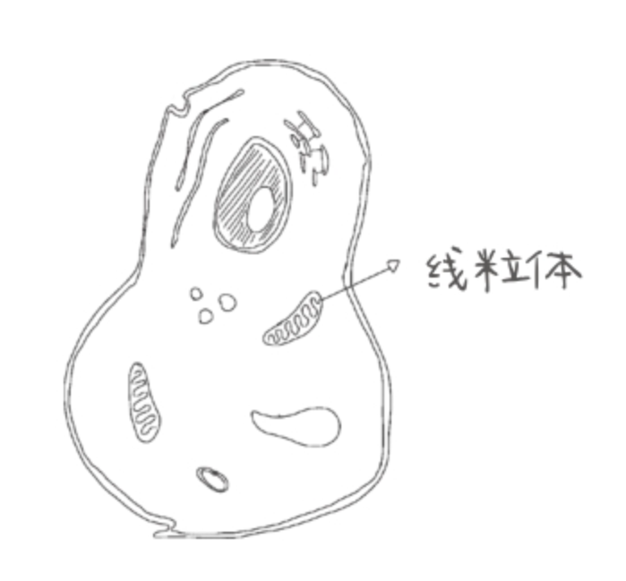
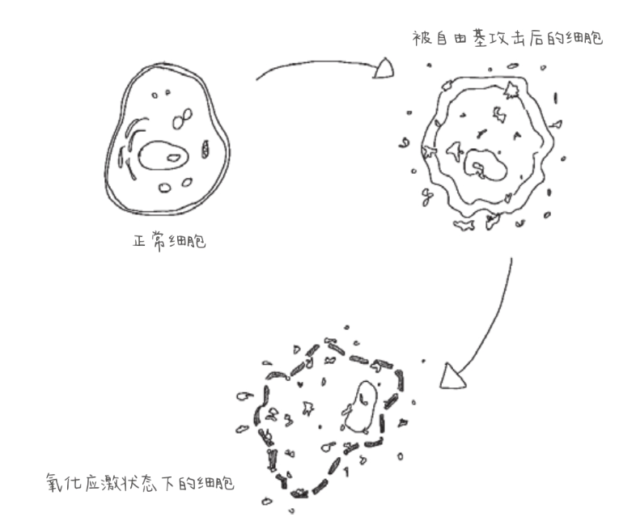
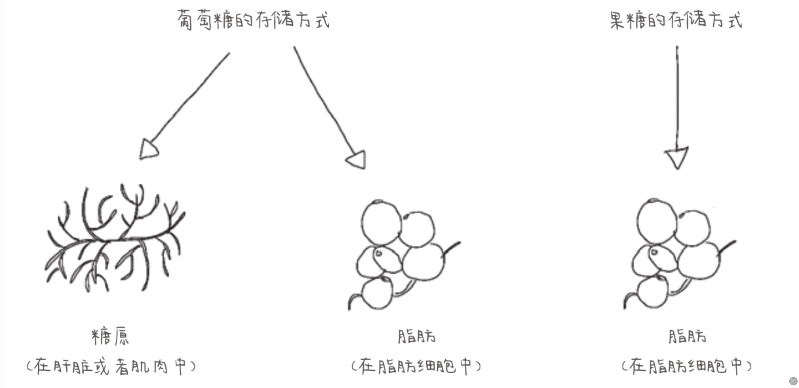
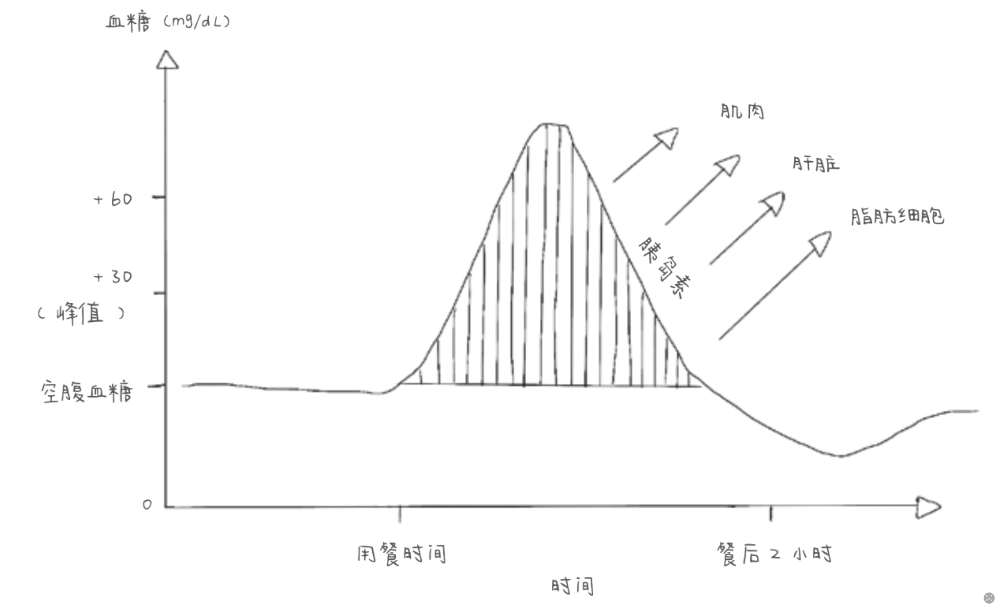

葡萄糖一旦进入细胞，它的首要生物学目标就是将自己转化为能量，而负责这项任务的是一种被称为线粒体的微型细胞器。

一个健康的细胞含有数以千计的功能性线粒体。
我们呼吸空气，吸入氧气。线粒体利用氧气将葡萄糖转化为一种化学形式的能量，提供给每个细胞以满足其所需。当葡萄糖进入我们体内细胞的时候，它会直奔线粒体，完成转化。
细胞需要多少能量，线粒体便消耗多少葡萄糖。多余的葡萄糖消耗不掉。当我们出现葡萄糖峰值时，向细胞输送葡萄糖的速度就会过快。一下子传送太多，葡萄糖就会堆积起来。当我们的线粒体淹没在不必要的葡萄糖之中时，一种能产生严重后果的小分子就会被释放出来，那就是自由基（有些葡萄糖分子会转化为脂肪，稍后我会进行介绍）。葡萄糖峰值的出现会导致自由基产生，从而引发一系列危及身体的连锁反应。
自由基是一个大问题，因为它们会破坏接触到的任何东西。它们会随机捕捉并修改我们的遗传基因，引发有害的基因突变，甚至可能引发癌症。自由基使我们的细胞膜产生漏洞，使细胞功能失常。”

在正常情况下，我们的体内会有一定数量的自由基，并且我们可以处理这些自由基。但是，随着葡萄糖峰值的反复出现，产生的自由基的数量变得很难掌控。当有太多的自由基需要中和时，我们的身体就会处于一种氧化应激状态。
氧化应激是导致心脏病、2型糖尿病、认知功能下降和一般性衰老的主要原因。另外，果糖比葡萄糖更容易造成氧化应激。这也是吃甜食（含有果糖）比吃淀粉类食物（不含果糖）对身体造成的伤害更大的原因之一。脂肪太多同样会增加氧化应激的情况。
数十年来，我们身体的细胞一直在被破坏。因为它们被葡萄糖塞满了，不堪重负，线粒体无法有效地将葡萄糖转化为能量，于是细胞开始“挨饿”，从而导致器官功能障碍。我们对此深有体会：尽管已经通过吃饭补充能量了，还是会感到疲惫；第二天早晨很难起床，并且一整天都没有精力。我们经常觉得很累。
当我们经历一个葡萄糖峰值之后，这种感觉会再来一次，并且更加难受。”
从出生的那一刻起，我们的身体内部就开始进行褐变，尽管这一过程非常缓慢。科学家发现，婴儿胸腔的软骨是白色的，而年近90岁的人的软骨会变成褐色。1912年，一位名叫路易斯·卡米拉·美拉德(Louis Camille Maillard)的法国科学家描述了这一现象，并用自己的名字为这一现象命名，人们称之为美拉德反应。
当一个葡萄糖分子与另一种类型的分子碰撞时，就会发生褐变。这会引起一种反应——第二个分子会被“糖化”。当一个分子被糖化后，这个分子就被破坏了。这个过程是生命中正常并且不可避免的一部分，是我们衰老的原因之一，也是我们的器官慢慢退化和我们最终走向死亡的原因之一。我们不能阻止这一过程，但是我们可以减缓或者加速它。
我们体内的葡萄糖越多，发生的糖化反应就越多。一旦一个细胞被糖化，那么，这个细胞就被永久损伤了，就像我们不可能只烤面包的一小块。细胞糖化的长期后果包括出现皱纹、白内障、心脏病和阿尔茨海默病等。既然褐变会造成老化，那么衰老就是褐变的结果，所以减缓体内的褐变反应就可以延长寿命。
果糖分子造成糖化反应的速度是葡萄糖分子的10倍，因此造成的损害也大得多。强调一下，这也是含糖的食物如饼干（含有果糖）引起的葡萄糖峰值会比淀粉类食物如意大利面（不含果糖）引起的葡萄糖峰值更快让我们衰老的原因。
葡萄糖水平和糖化反应联系得非常紧密，所以有一个非常简单的测量糖化情况的方法就是测量体内的葡萄糖水平。糖化血红蛋白(HbA1c)测试就是测量在过去的2～3个月，有多少红细胞的蛋白被糖化。糖化血红蛋白的水平越高，体内的美拉德反应发生得越频繁，参与循环的葡萄糖越多，衰老速度也就越快。
体内过多的自由基、氧化应激和糖化反应的结合会造成全身性炎症。炎症是一种保护措施，是身体在努力对抗入侵者。但是，慢性炎症对身体是有害的，因为它会攻击我们的身体。从表面看，我们看到的是发红和肿胀的现象，但是，在我们体内，组织和器官正在慢慢地受到损害。
“饮酒、吸烟、压力、肠漏综合征和身体脂肪释放的物质也会造成炎症。慢性炎症会导致很多慢性疾病，如脑卒中、慢性呼吸系统疾病、心脏疾病、肝病、肥胖和糖尿病。世界卫生组织将炎症相关疾病称为人类健康最大的威胁。在全世界，有3/5的人将会因为炎症相关疾病去世。不过，好消息是，降低葡萄糖峰值的饮食方式将会减少炎症的发生，同时也会降低患炎症相关疾病的风险。
在俄罗斯方块游戏中，玩家将方块排列成一排，以便在这些方块堆积前将其消除。这与我们体内的情况惊人地相似：当过多的葡萄糖进入时，我们的身体会尽最大努力将其储存起来。
身体的工作原理就是，当我们体内的葡萄糖水平升高时，胰腺就成了俄罗斯方块的玩家。”胰腺的主要功能之一就是释放一种叫作胰岛素的激素。胰岛素的唯一作用就是将多余的葡萄糖存储在身体的存储单元中，使其脱离身体循环，保护我们不被伤害。如果没有胰岛素，我们就无法生存。1型糖尿病患者由于胰腺无法产生胰岛素，必须通过注射胰岛素来弥补这一缺陷。
胰岛素会将多余的葡萄糖存储在几个不同的存储单元中。第一个存储单元是肝脏。肝脏是非常重要的存储单元，因为血液流经消化系统，经过肠道，携带着新产生的葡萄糖，最终都会流经肝脏。
肝脏将葡萄糖转化为一种新的形态，我们称之为糖原。这个过程相当于植物将葡萄糖转化为淀粉。糖原其实是淀粉的“表亲”——由许多葡萄糖分子手拉手相互连接而成。如果过多的葡萄糖保持着原本的形态，就会引起氧化应激和糖化反应。但是，一旦葡萄糖转化为糖原，就不会造成损害。肝脏可以存储大概100 g糖原形态的葡萄糖（相当于2份大薯条中的葡萄糖含量）。这是我们的身体每天所需的能量来源——200 g葡萄糖的一半。
第二个存储单元是我们的肌肉。肌肉是非常有效的存储单元，对于一个普通的体重为70 kg的成年人，其肌肉可以存储大约400 g糖原形态的葡萄糖，这相当于7份大薯条中的葡萄糖含量。虽然肝脏和肌肉是非常有效的存储单元，但是我们平时吃的葡萄糖实在是超过所需要的太多了，所以这些存储单元很快就存满了。如果没有其他的存储单元来储存多余的葡萄糖，我们的身体很快就无法再继续进行俄罗斯方块游戏。
一旦我们的肝脏和肌肉中存满了葡萄糖，体内多余的葡萄糖就会转化为脂肪，成为我们的脂肪储备，这是让我们体重增加的原因之一。而且脂肪还有更多来源。因为我们的身体不仅要处理葡萄糖，还必须要处理果糖。但是，果糖不能够转化为糖原存储在肝脏或者肌肉中。果糖的唯一存储方式就是转化为脂肪”

再回过头来看胰岛素。就像我之前解释的那样，胰岛素在这个过程中至关重要，因为它有助于我们将多余的葡萄糖存储在肝脏、肌肉、脂肪细胞这三个“储存柜”之中

餐后大约60分钟，我们体内的血糖浓度到达峰值，之后随着胰岛素的分泌，葡萄糖分子被储存在我们的肝脏、肌肉和脂肪细胞中血糖浓度开始下降。
胰岛素是非常有益的。但是，随着葡萄糖峰值出现次数的增多，我们体内分泌的胰岛素也会越来越多。
胰岛素过多是导致肥胖、2型糖尿病、多囊卵巢综合征等疾病的根本原因。非常重要的一点是，在我们将自己的血糖曲线变平稳的同时，我们自身的胰岛素曲线也会自动地变平稳。
当血糖水平降低而细胞中数以千计的线粒体需要葡萄糖的时候，身体就会调用储存在我们的肝脏和肌肉中的糖原，将其转化为葡萄糖。接着，伴随糖原储备逐渐减少，身体就会使用脂肪细胞中的脂肪作为能量，这样我们就会处于脂肪燃烧模式，然后体重就下降了。如果胰岛素水平过高，身体就会阻止脂肪燃烧：胰岛素使葡萄糖通往脂肪细胞的道路成为一条单行道，可以过去，但是不能回来。只有在葡萄糖峰值出现2小时后，胰岛素水平开始下降，我们才能再次燃烧现有的储备。
如果血糖水平和胰岛素水平一直保持稳定，则有利于我们减肥。2021年，加拿大科学家做的一项针对5600人的实验表明，体重减轻总是发生在胰岛素下降之前。”
葡萄糖峰值的形成过程会造成氧化应激、糖化、炎症和胰岛素过量反应，会导致多种慢性疾病，包括2型糖尿病、关节炎、抑郁症等的发生。
以下影响为短期影响
持续饥饿感是胰岛素水平较高的一种表现。如果葡萄糖峰值频繁出现，我们体内就会产生大量的胰岛素混合在其他激素之中。瘦素，是一种告诉我们“我们饱了，应该不用吃饭了”的激素。胰岛素水平过高会导致瘦素的信号被阻断。而胃促生长素，这种告诉我们“我们还很饿”的激素就会取而代之。尽管有脂肪储备，有大量可用的能量，身体依然会告诉我们还需要更多。所以，我们就会想要再吃东西。
而在我们吃东西后，更多的葡萄糖峰值就会随之出现，身体会分泌更多的胰岛素来将过量的葡萄糖转化为脂肪存储起来，这样又会加强胃促生长素的作用。我们体重增加得越多，就越会感到饿。这是一个不幸的、恶性的，也是不公平的循环。
2011年在耶鲁大学进行的一项实验，让我们对“食欲旺盛”的理解发生了改变。研究人员首先让招募来的受试者看屏幕上的食物图片，有沙拉、汉堡、曲奇和西蓝花，并通过磁共振成像(MRI)监测他们的大脑活动。然后用数字1\~9来记录他们想吃东西的程度，其中1表示“一点儿也不想吃”，冲动程度依次增加，最大值9表示“非常想吃”
在电脑端，除了观测受试者大脑的哪个部分会被激活，研究人员同时还监测了他们体内的血糖水平。他们发现，当受试者的血糖水平稳定时，他们的食欲并不旺盛。但是，当他们的葡萄糖水平开始下降时，会出现两种情况:
看到高热量的食物图片时，受试者大脑中控制食欲的中心会亮起来。
受试者想吃这些食物的程度明显高于其血糖水平稳定的时候。
你发现了吗?当血糖水平下降时，即使只下降了20 mg/d，低于我们在葡萄糖峰值发生时的30 mg/dL，也会让我们特别想吃高热量的食物。
问题是，我们的葡萄糖水平总会下降，确切地说，是在到达葡萄糖峰值后总会降下来。并且，葡萄糖峰值越高，下降的幅度就会越大。这意味着胰岛素在发挥它的作用，将多余的葡萄糖储存在不同的存储单元中。但是这同时也意味着我们会更想吃块饼干或者汉堡，甚至两者都想吃。而血糖曲线的平稳化会让我们的食欲没那么旺盛。
太多的葡萄糖会使线粒体停止工作，然后能量生产就会受到影响，结果就是我们会感到疲惫不堪。
血糖失调的一个常见症状是半夜突然惊醒，心脏怦怦直跳。通常情况下，这是血糖水平在半夜急剧下降导致的结果。绝经后的女性容易失眠和部分男性睡眠呼吸暂停也与他们喜欢在血糖处于高水平时，或刚经历葡萄糖峰值后立刻就寝有关。如果我们晚上想睡个好觉，那么就要让我们的血糖曲线平稳化。
在经历一次葡萄糖峰值之后，我们的免疫系统会出现短暂故障。如果此时血糖水平仍在缓慢升高，那么我们基本不具备对病毒等入侵者的免疫能力了--我们会更容易遭到病毒感染。事实证明、此时，我们尤其容易感染冠状病毒。良好的代谢能力(另一种描述线粒体功能的表述方式)是我们在感染冠状病毒后能快速恢复的主要因素之一。事实已经表明，血糖水平高的人群更容易感染病毒，也更容易出现并发症，并且由感染病毒引发的死亡率是血糖水平正常人群的2倍多，
女性在怀孕期间胰岛素水平都会升高。这是因为胰岛素不仅可以促进胎儿生长，还可以促进女性乳房组织的生长，为其将来的哺乳做好准备。但是，这些额外分泌的胰岛素有时会导致胰岛素抵抗综合征，即身体不再对胰岛素做出反应。胰岛素水平升高后却不能帮助自身将过量的葡萄糖储存在三个存储单元之中，导致我们体内的血糖水平升高、这就是常说的妊娠糖尿病。对于准妈妈们来说，这是一段可怕的经历，随着预产期的临近，这种情况往往会更加糟糕。
更年期女性的激素水平会急剧下降，而这种变化会让她们感觉自己经历了一场“地震”:性欲减退、盗汗、失眠、潮热...
较高的或者不稳定的血糖水平和高胰岛素水平会让更年期变得更加糟糕。研究表明，潮热和盗汗是更年期常见症状，并且多见于血糖水平和胰岛素水平较高的女性。但是，2020年哥伦比亚大学的一项研究发现，平稳的血糖曲线与更年期症状出现的时间有关，比如失眠。
偏头痛是一种虚弱性疾病。有数据证明，患有胰岛素抵抗综合征的女性的偏头痛患病率是未患此病的女性的2倍。患者的胰岛素水平降低后，偏头痛的情况会有所好转: 服用能够降低体内胰岛素水平的药物后，32位患者中超过半数的人偏头痛发作频率明显降低。
如果我们正准备参加考试、结算账目或者想赢得一场激烈的辩论赛，那么一定要选对在开始这些事情之前所吃的食物。当我们打算补充能量时，往往会倾向于吃一些甜食，但是，这种选择会让我们的大脑反应变得迟钝。事实证明，过高的葡萄糖峰值会影响大脑的记忆力和认知功能。
在经历了一晚上的禁食之后，这种糟糕的影响在第二天早晨达到顶峰。多希望我更早知道这一点，之前我的早餐永远是巧克力酱可丽饼。如果我们在上午9点有一个会议，并目想在会上表现出色，那么就吃一份让自己的血糖曲线变平稳的早餐吧。
1型糖尿病是一种自身免疫性疾病，胰腺中控制胰岛素分泌的细胞不再工作，导致患者无法分泌胰岛素，因此无法控制血糖水。
1型糖尿病患者在经历葡萄糖峰值时，因为缺少胰岛素的帮助无法将多余的葡萄糖存储在三个存储容器之中。为了弥补这点，患者需要每天多次注射胰岛素。然而，葡萄糖峰值和谷值是每天都要面对的、带来巨大压力的难题。通过使血糖曲线平稳化1型糖尿病患者的这个难题可以得到解决。许多事情都变得轻松了: 锻炼时不用担心出现低血糖症(一种由低血糖引起的状况了，也不用频繁地去厕所了(葡萄糖峰值的副作用)，甚至情绪也可以得到改善。
以下影响为长期影响
淀粉和含糖食物会引起连锁反应，表现为身上和脸上长粉刺，以及皮肤泛红。这是因为许多皮肤问题（包括湿疹和牛皮癣）都是由炎症引起的，而正如我们刚刚学到的，葡萄糖峰值引发炎症的原因之一。
葡萄糖峰值出现得越频繁，衰老速度越快。到60岁时，我们的葡萄糖峰值出现的次数会因为饮食习惯不同而与隔壁邻居相差成千上万倍。这不仅会影响我们的外表年龄，还会影响我们的内在年龄。
糖化、自由基过多以及随之而来的炎症会使我们的细胞功能缓慢退化，我们称之为衰老。自由基还会破坏胶原蛋白——一种存在于许多身体组织中的蛋白质，这种破坏会导致皮肤松弛、皱纹产生，并引发关节炎和软骨退化。这让我们的骨头变得脆弱，引起关节疼痛，导致我们再也不能去公园跑步。
在所有的器官中，大脑消耗的能量最多。大脑中有大量的线粒体，因此，当我们体内的葡萄糖含量过多时，大脑最容易受到影响。像其他细胞一样，大脑的神经元会感受到氧化应激，而频繁出现葡萄糖峰值会增加氧化应激，继而导致神经炎症，最终造成认知功能障碍。最重要的是，慢性炎症几乎是所有慢性退行性疾病的关键诱因。
阿尔茨海默病与血糖水平密切相关，因此也被称为3型糖尿病或大脑中的糖尿病。2型糖尿病患者患阿尔茨海默病的概率是非糖尿病患者的4倍，早期的症状也更明显：无法控制血糖水平的2型糖尿病患者，记忆和学习能力也相对更差。
和上面提到的其他症状一样，认知能力下降也是可逆的。越来越多的研究表明，当患者选择可以使血糖曲线比较平稳的饮食方式后，他们的记忆和认知能力会得到短期乃至长期的提升。加州大学洛杉矶分校的一项治疗项目发现，仅仅坚持3个月的使血糖曲线平稳化的饮食方式，一些因为认知功能障碍不得不离开工作岗位的人们就可以重返岗位，工作表现甚至比原来更好。
研究证明，癌症可能始于自由基导致的基因突变炎症促使癌细胞繁殖，而体内的胰岛素越多，癌症扩散得越快。葡萄糖是这许多过程中的关键因素，有数据显示，那些空腹血糖高于100 mg/dL的人，也就是那些糖尿病前期患者，死于癌症的可能性超过正常人的2倍。因此，使血糖曲线和胰岛素曲线平稳是预防癌症发生的重要一步。
当大脑出现问题时，它不会像其他器官用疼痛来提醒我们。不过，我们会表现出某些精神障碍，如情绪低落
饮食造成血糖水平不稳定的人，与那些食用相似的食物但血糖水平更稳定的人相比，前者的情绪会更糟糕，会出现更多的抑郁症状和更多的情绪障碍。并且，随着血糖水平越来越接近峰值，这些症状会愈演愈烈，所以任何能够使血糖曲线平稳化的努力，哪怕只是一点点的努力，都有助于让人们感觉更好。
葡萄糖峰值和特定的消化问题之间的联系仍在研究之中，但是，似乎较高的血糖水平会加重肠漏综合征的症状。炎症作为葡萄糖峰值引起的结果之一，会造成肠壁细胞产生漏洞，使那些本不应该通过的有毒物质通过(这就是肠漏出现的原因)，从而导致食物过敏或者其他免疫性疾病，如克罗恩病和类风湿性关节炎。
当我们谈论心脏病时，胆固醇往往是核心话题，然而这种观点正在被改变。事实上，心脏病患者中过半数的人的胆固醇水平是正常的。最新研究发现，引起心脏病的是一种名为β型低密度脂蛋白的特殊类型的胆固醇，而非笼统的“胆固醇过高”问题。科学家还发现它与葡萄糖、果糖和胰岛素有关。
血管的内壁是由细胞构成的。这些细胞很容易在线粒体的压力下受伤，并在葡萄糖以及果糖峰值下发生氧化应激，继而失去其光滑的表面，导致血管内壁变得凹凸不平。脂肪颗粒因此更容易黏附在血管内壁上面。而心脏病就始于斑块在血管内壁的积累。
当我们体内的胰岛素水平过高时，肝脏就开始产生β型低密度脂蛋白。这是一种小而密集的胆固醇，可以沿着血管壁爬行，很容易黏附在血管壁上。若我们体内葡萄糖、果糖和胰岛素的含量过高，该类型胆固醇就会被氧化，然后沉积到我们的血管内壁上斑块开始形成并阻碍血液流动，这就是心脏病的起因。葡萄糖峰值会促进这三个过程的进行。这就能解释为什么科学家发现尽管我们的空腹血糖是正常的，但是每多出现一次葡萄糖峰值，我们死于心脏病的风险就会增加一些。为了保护心脏，我们应该使葡萄糖、果糖和胰岛素曲线平稳化。
90%的医生会通过测量低密度脂蛋白的总含量来诊断心脏病，如果总含量过高，医生会给患者开他汀类的降胆固醇药物。但其实，影响最大的是β型低密度脂蛋白的含量和炎症。糟糕的是，他汀类的降胆固醇药物只能减少α型低密度脂蛋白，并不能减少导到问题产生的β型低密度脂蛋白。
这里再次强调，我们体内的葡萄糖和果糖，以及因为上述两者含量过高引起的炎症，才是我们了解心脏病的关键。医生可以通过观察甘油三酯与高密度脂蛋白的比率(反映人体内的β型低密度脂蛋白的存在情况)和C-反应蛋白(反映人体内的炎症水平)来较准确地判断我们患心脏病的风险。
甘油三酯在我们体内会转变为β型低密度脂蛋白，通过测量甘油三酯的含量能够预测体内B型低密度脂蛋白的含量。将甘油三酯的含量(mg/dL)除以高密度脂蛋白的含量(mg/dL)，得到的比率在预测低密度脂蛋白的含量方面相当准确。通常，该比率小于2是比较理想的。如果该比率大于2，说明身体可能出现问题了。同时，因为炎症是心脏病的一个关键因素，所以测量C-反应蛋白的含量(会随着炎症的严重程度而增加)比测量胆固醇的含量能够更好地判断心脏病的发生可能性。
科学家最近发现，胰岛素水平和生殖健康密切相关。大脑与生殖器官通过胰岛素水平这个指标的高低来判断我们的身体是否具备理想的受孕环境。胰岛素水平高的男性和女性更容易患不孕症，如果胰岛素紊乱，身体就不易受孕，同时提醒我们自己的身体不是很健康。饮食习惯引发的葡萄糖峰值出现得越频繁，胰岛素水平就会越高，人也就更容易患上不孕症。
对于女性来说，多囊卵巢综合征是导致其患不孕症的主要原因。该病征是一种由胰岛素过多引起的疾病，胰岛素水平越高，症状越明显。每8位女性中就有1位患多囊卵巢综合征，患有此病的部分女性卵巢甚至会被囊肿所拖累而不再产生卵子。
这是为什么呢? 因为胰岛素会刺激卵巢分泌更多的雄激素。最重要的是，胰岛素水平过高，会阻碍从雄激素到雌激素的自然转换，这就会导致体内存有更多的雄激素。而过量的雄激素，会让患上多囊卵巢综合征的女性表现出男性特征，如不该长毛发的地方长出毛发(如下巴)、出现秃顶、月经不规律或者停经、长出痤疮。卵巢也会保留和存储卵子，停止排卵。
对男性来说，葡萄糖代谢异常也与不育症相关:葡萄糖水平的升高常常伴随着精子质量的下降(精子存活率低)和勃起功能障碍等。最新研究表明，40岁以下男性的勃起功能障碍有可能是由未知的新陈代谢和葡萄糖代谢异常造成的。所以，备孕期间，使自己的血糖曲线平稳化非常重要。
胰岛素同样如此。当胰岛素水平长期处于高位时，我们的细胞就开始对胰岛素产生抵抗。胰岛素抵抗是造成2型糖尿病的根本原因: 针对同样数量的葡萄糖，肝脏、肌肉和脂肪细胞却需要越来越多的胰岛素才能应对。最终，这个系统罢工了。尽管我们的胰腺分泌了越来越多的胰岛素，葡萄糖却不再以糖原或淀粉的形式储存起来。其结果就是我们体内的血糖水平升高了。随着胰岛素抵抗越来越严重，我们会从糖尿病前期(空腹血糖水平超过100 mg/dL)转化为2型糖尿病(空腹血糖高于126 mg/dL)。虽然过程缓慢，但可以肯定的是，多年以后，我们经受的每个葡萄糖峰值都会加重胰岛素抵抗并提高我们体内的血糖水平。
治疗2型糖尿病的常用方法就是给患者注射更多的胰岛素，迫使脂肪细胞这个最大的存储容器继续存储葡萄糖(这会使患者体重增加)，使血糖水平暂时降下来。这会形成一个恶性循环，随着注射的胰岛素越来越多，患者会越来越胖，而胰岛素水平过高的根本问题却没有得到解决。注射额外的胰岛素在短期内能够帮助2型糖尿病患者控制血糖，但长期来看，却会使患者的病情恶化。更重要的是，我们知道2型糖尿病是一种炎症性疾病，而葡萄糖峰值会带来更多的炎症。
因此，降低血糖水平的饮食方式有助于逆转2型糖尿病。2021年对23项临床试验的回顾表明，逆转2型糖尿病最有效的方法就是使我们的血糖曲线平稳化，这比低碳饮食方式和低脂肪饮食方式更有效果，尽管这两种方式对2型糖尿病也有所帮助。在一项研究中，2型糖尿病患者在改变其饮食方式并降低其葡萄糖峰值之后，其一天内需要注射的胰岛素的剂量减少了一半。如果您正在服药，那么在尝试使用本书的任何窍门之前，请先咨询您的医生。
过量的果糖和酒精一样，会造成肝脏疾病。为了使我们的身体远离果糖，我们的肝脏会将果糖转化为脂肪，以此来将果糖从血液中清除。但是，当我们不断地摄入高果糖的食物时，我们的肝脏自身就会变胖，从而导致肝病。同样，
酒精也会造成这样的结果。
医学界将因吃高果糖的食物导致的肝病称为非酒精性脂肪性肝病或者非酒精性脂肪性肝炎。这种情况极其普遍，全世界有25%的成年人患有非酒精性脂肪性肝病。在超重的人群中，这种现象更为常见: 大约有70%的超重者患有非酒精性脂肪性肝病。遗憾的是，这类疾病随着时间的推移会变得更加严重，最终会导致肝功能衰竭甚至肝癌。
扭转这类状况的办法就是让肝脏休息，消耗掉多余的脂肪储备。解决问题的办法就是降低果糖水平，防止出现更多的果糖峰值。如果我们正在使自身的血糖曲线变得平稳，那么果糖峰值出现的次数也会自然而然地减少，因为果糖和葡萄糖在食物中同时存在。
为什么有些人60岁看起来像70岁，而有些人60岁了看起来却像刚45岁?后者抗衰老的方法之一就是平稳自己的血糖曲线。
正如我在前面讲到的，葡萄糖峰值会引发糖化，而糖化会加速衰老，让我们看上去比实际年龄更老。胶原蛋白分子被糖化后活性就减弱了，而胶原蛋白是修复伤口所必需的，同时也是使皮肤、指甲和头发健康的必需品。胶原蛋白受损会使皮肤松弛，产生皱纹。糖化现象越严重，皮肤就变得越松弛，皱纹也就越多。虽然这听起来疯狂，但事实确实如此。
糖化可以发生在我们体内的任何地方，包括我们的眼睛。当眼睛发生糖化时，眼睛内的分子就会受到损伤，并聚集到一起。随着时间的推移，累积的糖化蛋白会阻挡光线，我们就会患上自内障，